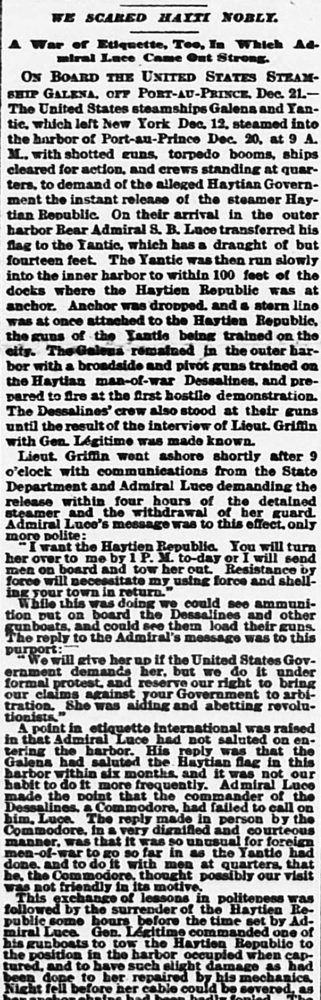

Ernment demands her. but we do it under formal protest and reserve our right to bring our claims against your Government to arbitrationEl gobierno la exige. pero lo hacemos bajo formal protesta y
The Sun. New York [N.Y.], December 30, 1888. Page 1. Published by Benj. H. Day. A daily newspaper, 1833–1916.The Sun. New York [N.Y.], 30 de diciembre de 1888. Página 1. Publicado por Benj. H. Day. Periódico diario, 1833–1916. View the originalVer el original

The Sun reported on the surrender of the seized American steamship Haytien Republic to Admiral Luce following a firm United States naval demonstration. Haitian President Légitime ordered the vessel repaired and returned to its original mooring under formal protest, asserting the ship had aided domestic rebels. The correspondent noted that the assertive American naval posture exerted a salutary moral effect in Port-au-Prince.The Sun dio cuenta de la restitución del apresado vapor estadounidense Haytien Republic al almirante Luce merced a una rotunda demostración naval de los Estados Unidos. El mandatario haitiano Légitime mandó reparar y reintegrar la nave a su fondeadero primitivo formulando una protesta solemne en la que sostenía que el mercante prestó auxilio a los sediciosos locales. El cronista subrayó que la resuelta actitud de la escuadra estadounidense causó un saludable escarmiento moral en Puerto Príncipe.
FULL TEXT:TEXTO COMPLETO:
WE SCARED HAYTI NOBLY.ASUSTAMOS NOBLEMENTE A HAITÍ.
A War of Etiquette, Too, In Which Admiral Luce Came Out Strong.Una guerra de etiqueta, también, en la que el almirante Luce salió fuerte.
ON BOARD THE UNITED STATES STEAMSHIP GALENA, OFF PORT-AU-PRINCE, Dec. 21.—A BORDO DEL VAPOR DE LOS ESTADOS UNIDOS GALENA, FRENTE A PUERTO PRÍNCIPE, 21 de diciembre.—
The United States steamships Galena and Yantic, which left New York Dec. 12, steamed into the harbor of Port-au-Prince Dec. 20, at 9 A. M., with shotted guns, torpedo booms, ships cleared for action, and crews standing at quarters, to demand of the alleged Haytian Government the instant release of the steamer Haytian Republic. On their arrival in the outer harbor Rear Admiral S. B. Luce transferred his flag to the Yantic, which has a draught of but fourteen feet. The Yantic was then run slowly into the inner harbor to within 100 feet of the docks where the Haytien Republic was at anchor. Anchor was dropped, and a stern line was at once attached to the Haytien Republic, the guns of the Yantic being trained on the city. The Galena remained in the outer harbor with a broadside and pivot guns trained on the Haytian man-of-war Dessalines, and prepared to fire at the first hostile demonstration. The Dessalines' crew also stood at their guns until the result of the interview of Lieut. Griffin with Gen. Légitime was made known.Los vapores de los Estados Unidos Galena y Yantic, que salieron de Nueva York el 12 de diciembre, entraron al vapor en el puerto de Puerto Príncipe el 20 de diciembre, a las 9 de la mañana, con cañones cargados con metralla, redes antitorpedos, buques despejados para la acción, y tripulaciones en sus puestos de combate, para demandar del alegado Gobierno haitiano la liberación instantánea del vapor Haytian Republic. A su llegada al puerto exterior el Contralmirante S. B. Luce transfirió su bandera al Yantic, que tiene un calado de solo catorce pies. El Yantic fue entonces llevado lentamente al puerto interior hasta dentro de 100 pies de los muelles donde la Haytien Republic estaba anclada. Se echó el ancla, y una línea de popa fue inmediatamente atada a la Haytien Republic, los cañones del Yantic apuntando a la ciudad. El Galena permaneció en el puerto exterior con un costado y cañones pivotantes apuntando al buque de guerra haitiano Dessalines, y preparado para disparar a la primera demostración hostil. La tripulación del Dessalines también estuvo en sus cañones hasta que se dio a conocer el resultado de la entrevista del teniente Griffin con el general Légitime.
Lieut. Griffin went ashore shortly after 9 o'clock with communications from the State Department and Admiral Luce demanding the release within four hours of the detained steamer and the withdrawal of her guard. Admiral Luce's message was to this effect, only more polite:El teniente Griffin fue a tierra poco después de las 9 con comunicaciones del Departamento de Estado y del almirante Luce demandando la liberación dentro de cuatro horas del vapor detenido y la retirada de su guardia. El mensaje del almirante Luce era a este efecto, solo que más cortés:
"I want the Haytien Republic. You will turn her over to me by 1 P. M. to-day or I will send men on board and tow her out. Resistance by force will necessitate my using force and shelling your town in return."«Quiero la Haytien Republic. Me la entregarán para la 1 de la tarde de hoy o enviaré hombres a bordo y la remolcaré fuera. La resistencia por la fuerza necesitará que use la fuerza y bombardee su pueblo a cambio.»
While this was doing we could see ammunition put on board the Dessalines and other gunboats, and could see them load their guns. The reply to the Admiral's message was to this purport:Mientras esto se hacía podíamos ver municiones puestas a bordo del Dessalines y otros cañoneros, y podíamos verlos cargar sus cañones. La respuesta al mensaje del Almirante fue a este tenor:
"We will give her up if the United States Government demands her, but we do it under formal protest, and reserve our right to bring our claims against your Government to arbitration. She was aiding and abetting revolutionists."«La entregaremos si el Gobierno de los Estados Unidos la demanda, pero lo hacemos bajo protesta formal, y reservamos nuestro derecho de llevar nuestras reclamaciones contra su Gobierno a arbitraje. Estaba ayudando e instigando a revolucionarios.»
A point in etiquette international was raised in that Admiral Luce had not saluted on entering the harbor. His reply was that the Galena had saluted the Haytian flag in this harbor within six months, and it was not our habit to do it more frequently. Admiral Luce made the point that the commander of the Dessalines, a Commodore, had failed to call on him, Luce. The reply made in person by the Commodore, in a very dignified and courteous manner, was that it was so unusual for foreign men-of-war to go so far in as the Yantic had done, and to do it with men at quarters, that he, the Commodore, thought possibly our visit was not friendly in its motive.Un punto de etiqueta internacional fue planteado en que el almirante Luce no había saludado al entrar en el puerto. Su respuesta fue que el Galena había saludado la bandera haitiana en este puerto dentro de seis meses, y no era nuestra costumbre hacerlo con más frecuencia. El almirante Luce hizo el punto de que el comandante del Dessalines, un Comodoro, había fallado en visitarlo a él, Luce. La respuesta hecha en persona por el Comodoro, de una manera muy digna y cortés, fue que era tan inusual que buques de guerra extranjeros fueran tan adentro como el Yantic había ido, y hacerlo con hombres en sus puestos de combate, que él, el Comodoro, pensó que posiblemente nuestra visita no era amistosa en su motivo.
This exchange of lessons in politeness was followed by the surrender of the Haytien Republic some hours before the time set by Admiral Luce. Gen. Légitime commanded one of his gunboats to tow the Haytien Republic to the position in the harbor occupied when captured, and to have such slight damage as had been done to her repaired by his mechanics. Night fell before her cable could be severed, as had been planned.Este intercambio de lecciones de cortesía fue seguido por la entrega de la Haytien Republic algunas horas antes del tiempo fijado por el almirante Luce. El general Légitime ordenó a uno de sus cañoneros remolcar la Haytien Republic a la posición en el puerto ocupada cuando fue capturada, y hacer que el leve daño que se le había hecho fuera reparado por sus mecánicos. La noche cayó antes de que su cable pudiera ser cortado, como se había planeado.
[Editor's note: the paper writes of the east as part of Hayti. From 1822 to 1844 the Dominican Republic was held by Haitian military occupation, against its people's will; it restored its independence on February 27, 1844.][Nota del editor: el periódico habla del este como parte de Haití. De 1822 a 1844 la República Dominicana estuvo bajo ocupación militar haitiana, contra la voluntad de su pueblo; restauró su independencia el 27 de febrero de 1844.]